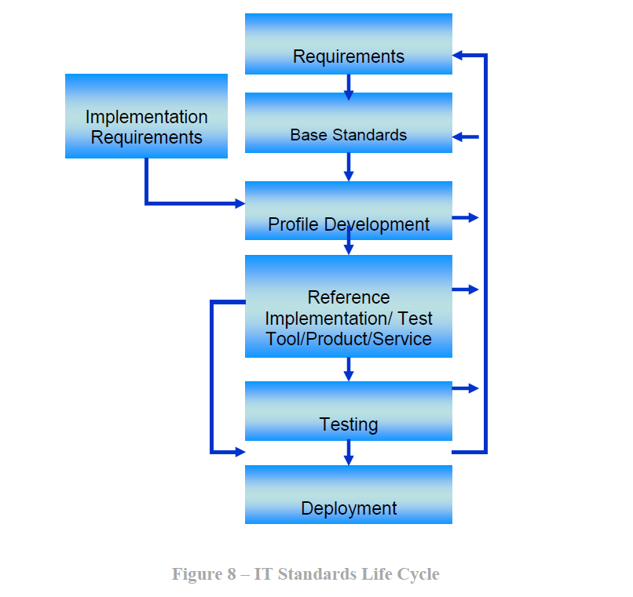

Figure 8 is a high-level conceptualization of ways in which IT standards are developed and methods by which standards-based IT products, processes, and services are deployed. This figure is not meant to imply that these processes occur sequentially. Many of the processes illustrated can and should occur concurrently. Some of these processes (e.g., reference implementations, product / process / service / test tools development, testing, deployment) can and usually do also occur outside of the SDO process. These processes provide input and feedback to improve the standards, profiles, test tools, and associated stages of product development.
Cloud computing development has been characterized by its emergence during a period in which extremely interconnected and fast-moving product cycles have led to an explosion of innovation that strains the conventional SDO-based standards development process. While this is a rapidly changing area, cloud computing is not unique in this respect, and several other examples exist in history of similar periods of rapid change followed by standardization. In the long run, the processes that drive IT standards development are likely to follow historical precedent as over-arching requirements begin to become clear, and as standards emerge from such processes to fill these requirements. We therefore expect conformance testing, conformity assessment, and other processes related to the maturity and adoption of standards to emerge. Some evidence of this maturity is already starting to become manifest in the cloud standards landscape.
Figure 8 – IT Standards Life Cycle
 Volver al índice principal